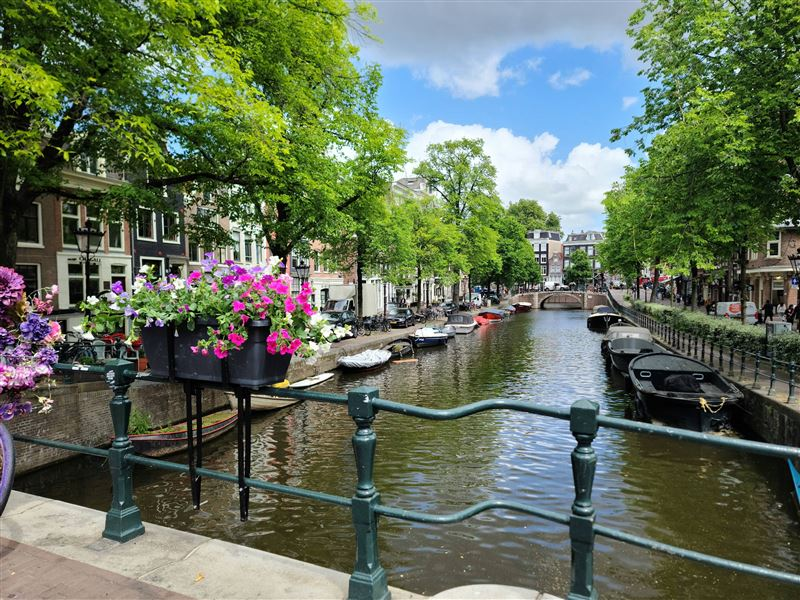
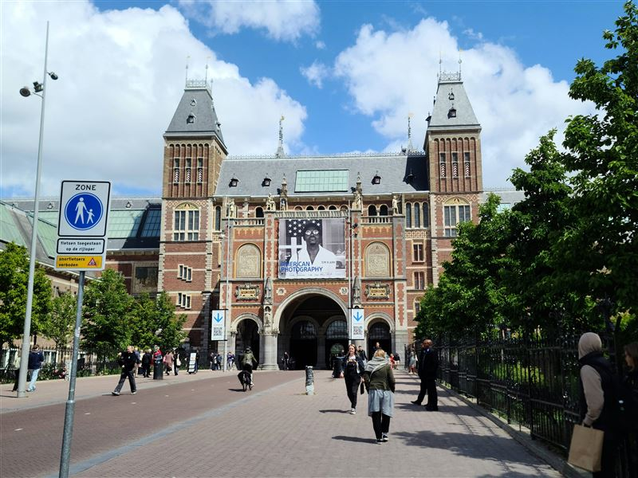
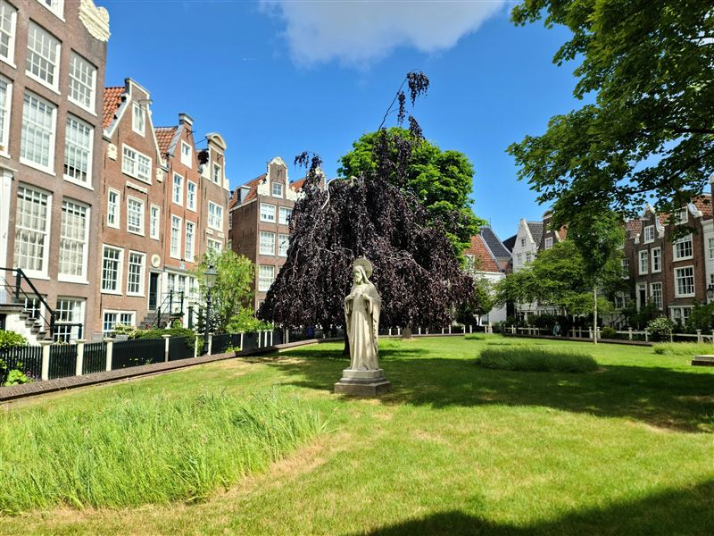
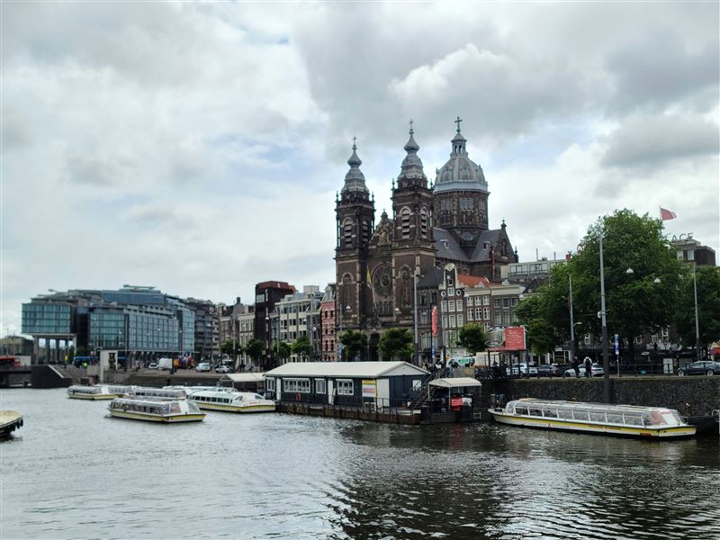
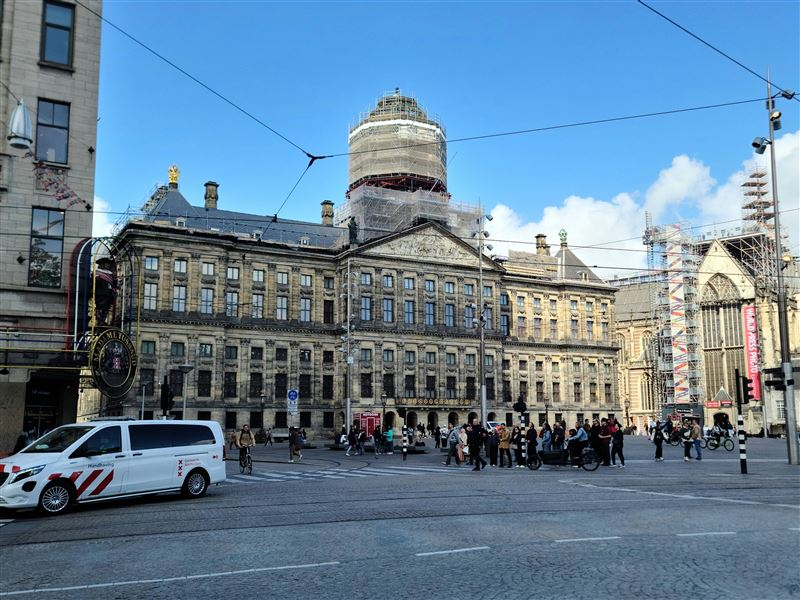
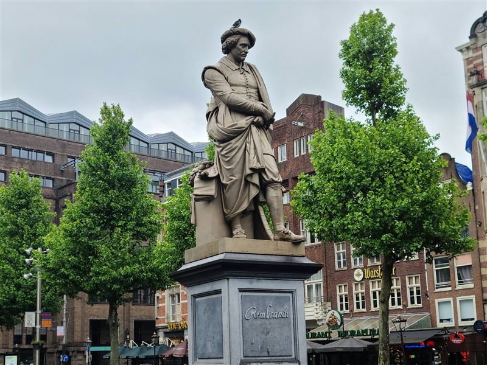
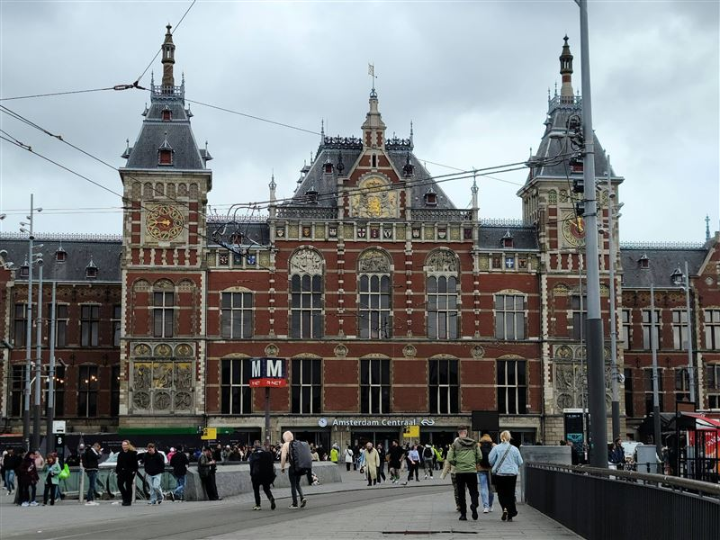
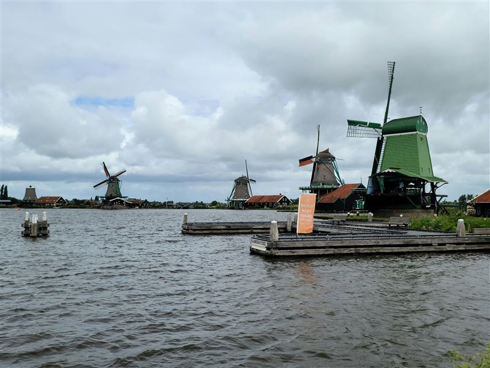

Explore Amsterdam
A Brief History
Amsterdam began as a 12th-century fishing village before rapidly expanding during the Dutch Golden Age of the 17th century into the world's leading commercial center. Famous for its meticulously planned concentric canal ring and striking gabled houses, the city has long been a bastion of free thought, artistic innovation, and immense maritime history.
Attractions Map
Top Sights & Activities

Canals of Amsterdam
Developed primarily in the 17th century during the Dutch Golden Age, this extensive canal network was an innovative urban planning project for water management, defense, and transport. The concentric rings reflect the historical wealth generated from global maritime trade.

Rijksmuseum
Relocated to its current building in 1885, this national museum houses an extensive collection of Dutch art and history. It was established to preserve and showcase the cultural legacy of the Netherlands, most notably works from the 17th-century Golden Age.

Begijnhof
Dating back to the early 14th century, this enclosed courtyard was established for a Catholic sisterhood of unmarried women who lived a religious life without monastic vows. It remains a tranquil enclave of historic residential architecture, preserving a unique aspect of Dutch religious history.

Basilica of Saint Nicholas
Built in the late 19th century, this prominent Catholic basilica features a Neo-Baroque and Neo-Renaissance design. Dedicated to the patron saint of sailors, it reflects the city's deep historical connection to maritime trade and the resurgence of Catholic life in the Netherlands.

Royal Palace Amsterdam
Originally constructed as a city hall in 1655, this massive building was a symbol of civic wealth and republican power during the Dutch Golden Age. Converted into a royal palace in 1808, it functions today as one of the official residences of the Dutch monarch.

Rembrandtplein
Established in 1668 as a dairy market, this square evolved into a major center for city life. It was renamed in 1876 to honor the famous Dutch Golden Age painter, marked by a prominent statue at its center, bridging its historical origins with its modern role as a cultural space.

Amsterdam Centraal Station
Opened in 1889, this monumental transit hub blends Gothic and Renaissance Revival styles. Built on artificial islands, its construction modernized Dutch transport networks and significantly altered the city's waterfront, acting as a primary gateway for international travel.

Zaanse Schans Windmill
This heritage area recreates an 18th and 19th-century Dutch village. The iconic windmills were crucial industrial engines for sawing wood, grinding spices, and pressing oil, offering a tangible connection to early industrial techniques and traditional water management systems.